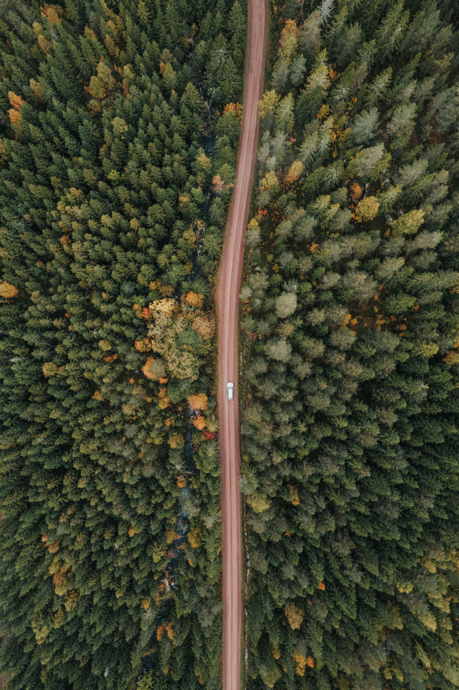
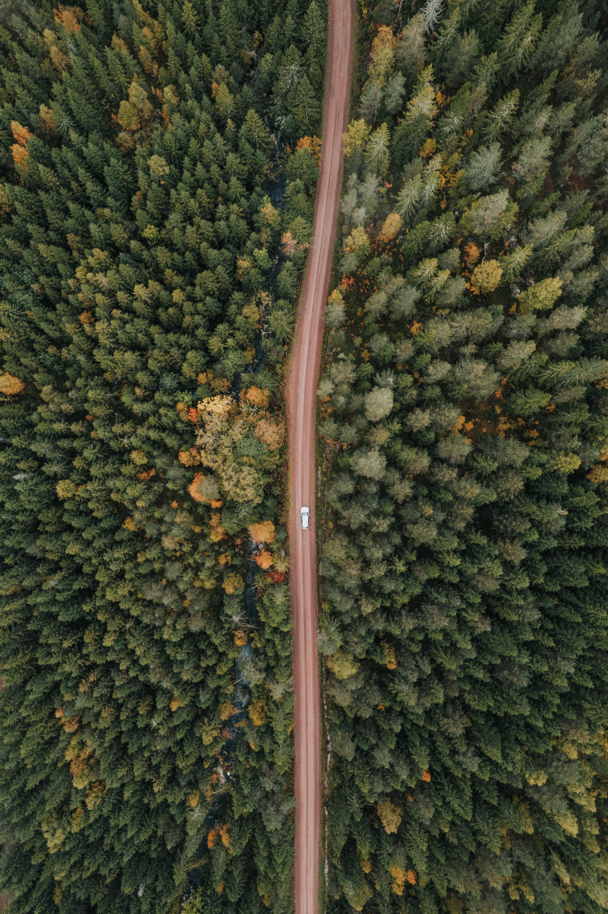

lorem Air pollution emissions have declined in the last two decades,
resulting in better air quality. Despite this improvement,
air pollution remains the largest environmental health risk in Europe.
An estimated 275,000 premature deaths are caused by fine particulate matter and 64,000 by nitrogen dioxide (NO2) each year. These pollutants are linked to asthma, heart disease, and stroke.
(a+b) 2=a 2+b 2+2ab 
